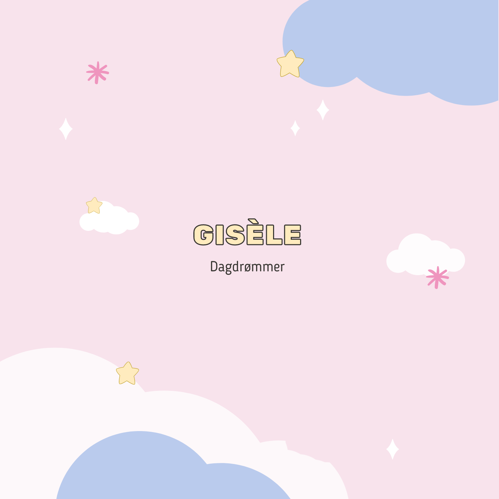

WELCOME TO AUTUMN'S WEBSITE
With a kind of retro style
My Music
My Instagram
My Pronouns Page
My GitHub
Autumn's Lab
Announcements
Gisèle's 4th EP 『Dagdrømmer』 featuring Main Track 「BLOSSOM」 and Extra 「Caramelldansen DnB Remix」 Available on Youtube from April 10th at 9 AM CST!!!
